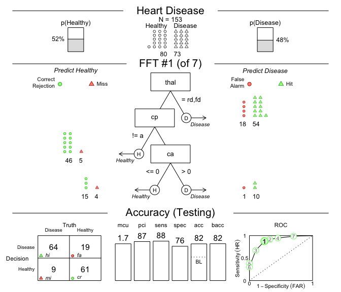
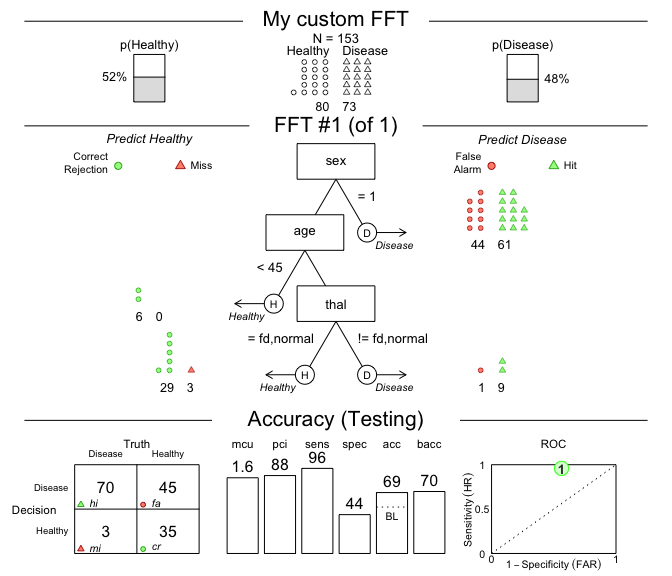

The R package FFTrees creates, visualizes and evaluates fast-and-frugal decision trees (FFTs) for solving binary classification tasks, using the algorithms and methods described in Phillips, Neth, Woike & Gaissmaier (2017, 10.1017/S1930297500006239).
What are fast-and-frugal trees (FFTs)?
Fast-and-frugal trees (FFTs) are simple and transparent decision algorithms for solving binary classification problems. The key feature making FFTs faster and more frugal than other decision trees is that every node allows making a decision. When predicting novel cases, the performance of FFTs competes with more complex algorithms and machine learning techniques, such as logistic regression (LR), support-vector machines (SVM), and random forests (RF). Apart from being faster and requiring less information, FFTs tend to be robust against overfitting, and are easy to interpret, use, and communicate.
Installation
The latest release of FFTrees is available from CRAN at https://CRAN.R-project.org/package=FFTrees:
install.packages("FFTrees")The current development version can be installed from its GitHub repository at https://github.com/ndphillips/FFTrees:
# install.packages("devtools")
devtools::install_github("ndphillips/FFTrees", build_vignettes = TRUE)Getting started
As an example, let’s create a FFT predicting patients’ heart disease status (Healthy vs. Disease) based on the heartdisease dataset included in FFTrees:
Using data
The heartdisease data provides medical information for 303 patients that were examined for heart disease. The full data contains a binary criterion variable describing the true state of each patient and were split into two subsets: A heart.train set for fitting decision trees, and heart.test set for a testing these trees. Here are the first rows and columns of both subsets of the heartdisease data:
-
heart.train(the training / fitting data) describes 150 patients:
| diagnosis | age | sex | cp | trestbps | chol | fbs | restecg | thalach | exang | oldpeak | slope | ca | thal |
|---|---|---|---|---|---|---|---|---|---|---|---|---|---|
| FALSE | 44 | 0 | np | 108 | 141 | 0 | normal | 175 | 0 | 0.6 | flat | 0 | normal |
| FALSE | 51 | 0 | np | 140 | 308 | 0 | hypertrophy | 142 | 0 | 1.5 | up | 1 | normal |
| FALSE | 52 | 1 | np | 138 | 223 | 0 | normal | 169 | 0 | 0.0 | up | 1 | normal |
| TRUE | 48 | 1 | aa | 110 | 229 | 0 | normal | 168 | 0 | 1.0 | down | 0 | rd |
| FALSE | 59 | 1 | aa | 140 | 221 | 0 | normal | 164 | 1 | 0.0 | up | 0 | normal |
| FALSE | 58 | 1 | np | 105 | 240 | 0 | hypertrophy | 154 | 1 | 0.6 | flat | 0 | rd |
Table 1: Beginning of the heart.train subset (using the data of 150 patients for fitting/training FFTs).
-
heart.test(the testing / prediction data) describes 153 different patients on the same variables:
| diagnosis | age | sex | cp | trestbps | chol | fbs | restecg | thalach | exang | oldpeak | slope | ca | thal |
|---|---|---|---|---|---|---|---|---|---|---|---|---|---|
| FALSE | 51 | 0 | np | 120 | 295 | 0 | hypertrophy | 157 | 0 | 0.6 | up | 0 | normal |
| TRUE | 45 | 1 | ta | 110 | 264 | 0 | normal | 132 | 0 | 1.2 | flat | 0 | rd |
| TRUE | 53 | 1 | a | 123 | 282 | 0 | normal | 95 | 1 | 2.0 | flat | 2 | rd |
| TRUE | 45 | 1 | a | 142 | 309 | 0 | hypertrophy | 147 | 1 | 0.0 | flat | 3 | rd |
| FALSE | 66 | 1 | a | 120 | 302 | 0 | hypertrophy | 151 | 0 | 0.4 | flat | 0 | normal |
| TRUE | 48 | 1 | a | 130 | 256 | 1 | hypertrophy | 150 | 1 | 0.0 | up | 2 | rd |
Table 2: Beginning of the heart.test subset (used to predict diagnosis for 153 new patients).
Our challenge is to predict each patient’s diagnosis — a column of logical values indicating the true state of each patient (i.e., TRUE or FALSE, based on the patient suffering or not suffering from heart disease) — from the values of potential predictors.
Questions answered by FFTs
To solve binary classification problems by FFTs, we must answer two key questions:
- Which of the variables should we use to predict the criterion?
- How should we use and combine predictor variables into FFTs?
Once we have created some FFTs, additional questions include:
- How accurate are the predictions of a specific FFT?
- How costly are the predictions of each algorithm?
The FFTrees package answers these questions by creating, evaluating, and visualizing FFTs.
Creating fast-and-frugal trees (FFTs)
We use the main FFTrees() function to create FFTs for the heart.train data and evaluate their predictive performance on the heart.test data:
- The main
FFTrees()function allows creating anFFTreesobject for theheartdiseasedata:
# Create an FFTrees object from the heartdisease data:
heart_fft <- FFTrees(formula = diagnosis ~.,
data = heart.train,
data.test = heart.test,
decision.labels = c("Healthy", "Disease"))Evaluating FFTrees() analyzes the training data, creates several FFTs, and applies them to the test data. The results are stored in an object heart_fft, which can be printed, plotted and summarized (with options for selecting specific data or trees).
- Let’s plot our
FFTreesobject to visualize a tree and its predictive performance (on thetestdata):
# Plot the best tree applied to the test data:
plot(heart_fft,
data = "test",
main = "Heart Disease")
Figure 1: A fast-and-frugal tree (FFT) predicting heart disease for test data and its performance characteristics.
- A summary of the trees in our
FFTreesobject and their key performance statistics can be obtained bysummary(heart_fft).
Building FFTs from verbal descriptions
FFTs are so simple that we even can create them ‘from words’ and then apply them to data.
For example, let’s create a tree with the following three nodes and evaluate its performance on the heart.test data:
- If
sex = 1, predict Disease. - If
age < 45, predict Healthy. - If
thal = {fd, normal}, predict Healthy,
otherwise, predict Disease.
These conditions can directly be supplied to the my.tree argument of FFTrees():
# Create custom FFT 'in words' and apply it to test data:
# 1. Create my own FFT (from verbal description):
my_fft <- FFTrees(formula = diagnosis ~.,
data = heart.train,
data.test = heart.test,
decision.labels = c("Healthy", "Disease"),
my.tree = "If sex = 1, predict Disease.
If age < 45, predict Healthy.
If thal = {fd, normal}, predict Healthy,
Otherwise, predict Disease.")
# 2. Plot and evaluate my custom FFT (for test data):
plot(my_fft,
data = "test",
main = "My custom FFT")
Figure 2: An FFT predicting heart disease created from a verbal description.
The performance measures (in the bottom panel of Figure 2) show that this particular tree is somewhat biased: It has nearly perfect sensitivity (i.e., is good at identifying cases of Disease) but suffers from low specificity (i.e., performs poorly in identifying Healthy cases). Expressed in terms of its errors, my_fft incurs few misses at the expense of many false alarms. Although the accuracy of our custom tree still exceeds the data’s baseline by a fair amount, the FFTs in heart_fft (created above) strike a better balance.
Overall, what counts as the “best” tree for a particular problem depends on many factors (e.g., the goal of fitting vs. predicting data and the trade-offs between maximizing accuracy vs. incorporating the costs of cues or errors). To explore this range of options, the FFTrees package enables us to design and evaluate a range of FFTs.
References
We had fun creating the FFTrees package and hope you like it too! As a comprehensive, yet accessible introduction to FFTs, we recommend our article in the journal Judgment and Decision Making (2017), entitled FFTrees: A toolbox to create, visualize,and evaluate fast-and-frugal decision trees (available in html | PDF ).
Citation (in APA format):
- Phillips, N. D., Neth, H., Woike, J. K. & Gaissmaier, W. (2017). FFTrees: A toolbox to create, visualize, and evaluate fast-and-frugal decision trees. Judgment and Decision Making, 12 (4), 344–368. doi 10.1017/S1930297500006239
We encourage you to read the article to learn more about the history of FFTs and how the FFTrees package creates, visualizes, and evaluates them. When using FFTrees in your own work, please cite us and share your experiences (e.g., on GitHub) so we can continue developing the package.
By 2024, over 130 scientific publications have used or cited FFTrees (see Google Scholar for the full list). Examples include:
Lötsch, J., Haehner, A., & Hummel, T. (2020). Machine-learning-derived rules set excludes risk of Parkinson’s disease in patients with olfactory or gustatory symptoms with high accuracy. Journal of Neurology, 267(2), 469–478. doi 10.1007/s00415-019-09604-6
Kagan, R., Parlee, L., Beckett, B., Hayden, J. B., Gundle, K. R., & Doung, Y. C. (2020). Radiographic parameter-driven decision tree reliably predicts aseptic mechanical failure of compressive osseointegration fixation. Acta Orthopaedica, 91(2), 171–176. doi 10.1080/17453674.2020.1716295
Klement, R. J., Sonke, J. J., Allgäuer, M., Andratschke, N., Appold, S., Belderbos, J., … & Mantel, F. (2020). Correlating dose variables with local tumor control in stereotactic body radiotherapy for early stage non-small cell lung cancer: A modeling study on 1500 individual treatments. International Journal of Radiation Oncology * Biology * Physics. doi 10.1016/j.ijrobp.2020.03.005
Nobre, G. G., Hunink, J. E., Baruth, B., Aerts, J. C., & Ward, P. J. (2019). Translating large-scale climate variability into crop production forecast in Europe. Scientific Reports, 9(1), 1–13. doi 10.1038/s41598-018-38091-4
Buchinsky, F. J., Valentino, W. L., Ruszkay, N., Powell, E., Derkay, C. S., Seedat, R. Y., … & Mortelliti, A. J. (2019). Age at diagnosis, but not HPV type, is strongly associated with clinical course in recurrent respiratory papillomatosis. PloS One, 14(6). doi 10.1371/journal.pone.0216697
[File README.Rmd last updated on 2024-05-21.]